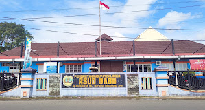

Rumah Sakit

Rumah Sakit Umum Daerah Dabo
082391100355 | rsud.dabo@gmail.com | www.rsuddabo.linggakab.go.id
Jl. Kesehatan No.1, Dabo Lama, Kec. Singkep, Kabupaten Lingga, Kepulauan Riau 29871
Ambulance
Pemulasaran Jenazah
Farmasi
High Care Unit
UGD
Bedah Sentral
Lainnya
Rumah Sakit Umum Daerah Encik Mariyam Lingga
07767031478 | http://www.rsudem.linggakab.go.id
Jl. Masjid Jami Sultan Lingga No.46, Daik, Kec. Lingga, Kabupaten Lingga, Kepulauan Riau 29872
Medik Dasar
Medik Gigi Mulut
KIA/KB
Penyakit Dalam
UGD
Radiologi
Lainnya

Rumah Sakit Umum Lapangan Lingga
081372771583 | rsl_lingga@yahoo.co.id
Masjid Jami Sultan, Jalan, Panggak Laut, Lingga, Lingga Regency, Riau Islands 29872
Medik Dasar
Medik Gigi Mulut
Oftalmologi
Penyakit Dalam
UGD
Farmasi
Lainnya